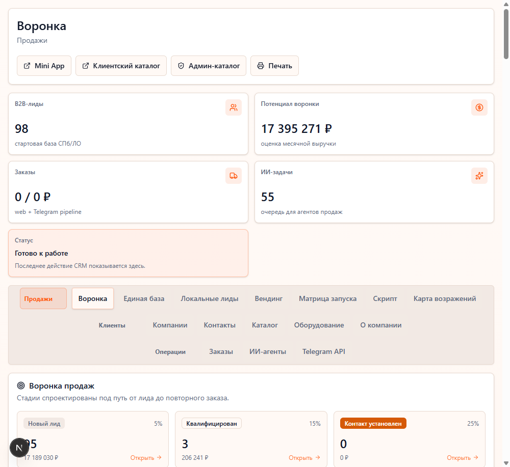

Что проверять
CRM UI, agent runtime artifact, source repo, локальную базу лидов и коммерческий сценарий передачи контекста.
Страница продукта
CRM + локальные лиды + AI handoff: проект показывает, как искать кандидатов от производства через защищенный 2GIS search, ФНС/DaData enrichment и открытую маршрутную проверку, а затем не терять контекст между CRM и agent runtime.

CRM UI, agent runtime artifact, source repo, локальную базу лидов и коммерческий сценарий передачи контекста.
Ключевой слой Lunch Up CRM из документации: 2GIS lead search сначала работает как dry-run, импорт требует confirmed import, затем `/api/companies` сохраняет enrichment, источники и следующий шаг.
Сборка продуктового handoff между локальным поиском компаний, ФНС/DaData-проверкой, CRM-состоянием и AI-ассистентом.
Менеджер видит следующий шаг, руководитель видит процесс, агент не теряет историю.
Проект доказывает не разговоры об AI, а рабочую связку human + CRM + agent.
Product proof page
A CRM, local lead-sourcing and sales workflow prototype: search candidates from production through protected 2GIS search, FNS/DaData enrichment and open route checks, then keep CRM and agent context intact.
CRM UI, agent runtime artifact, source repository, local lead base and the commercial context-handoff scenario.
The documented Lunch Up layer runs 2GIS lead search as dry-run first, requires confirm_import for writes, then `/api/companies` stores enrichment, source records and the next action.
Designed the product handoff between local company sourcing, FNS/DaData checks, CRM state and AI-assistant next actions.
Managers see the next step, leads keep context, and the AI layer does not lose operational history.
The repo demonstrates a working human + CRM + agent handoff rather than generic AI positioning.